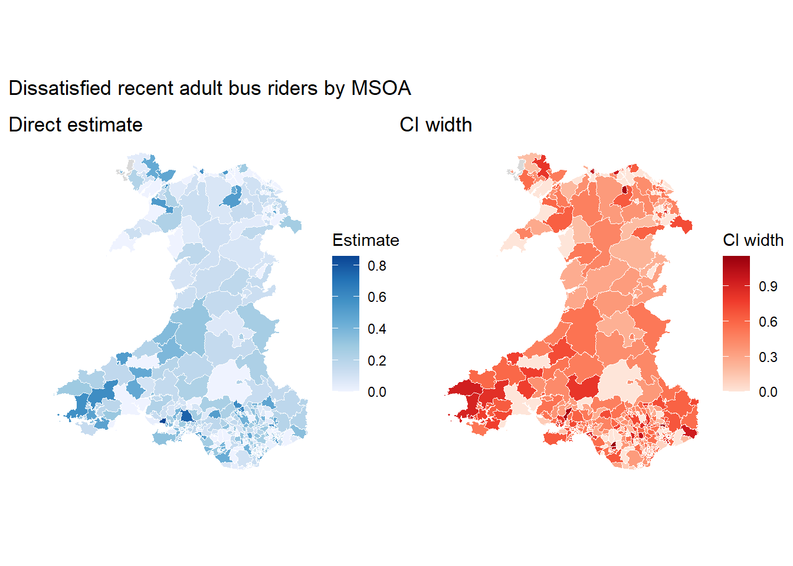

Direct estimation is the process of deriving area-level estimates using only the survey data. The direct estimates and their sampling variances are also key inputs for the Fay-Herriot area-level estimation in the next step.
1 Direct Estimator and Sampling Variances
The estimator should match the information available in the survey file and the estimand definition.
The simplest direct estimator, but likely biased if survey sampling is not random and imprecise when \(n_d\) is too low.
Here, the direct estimate \(\hat{\theta}_d^{DIR}\) is for area \(d\) with sample size \(n_d\) and domain size \(N_d\) if known.
Direct estimates are paired with sampling variances, which describe how much uncertainty comes from observing only a sample within each estimation area. The variance depends on the estimator, the weight scale, and the available survey design information.
For easier interpretation, we usually convert sampling variance into:
Coefficient of Variation (CV): the standard error divided by the estimate. Values above 1 indicate that the typical standard error is larger than the estimate.
Confidence Interval Width: the approximate width of the 95% confidence interval, expressed in the original units.
2 Evaluate Direct Estimates
Use direct estimates and sampling variances to decide whether direct reporting is enough, or whether model-based SAE is needed.
Scenario
Next step
Too many areas have no or very few samples; variances are missing or unreasonably large
Revisit the estimand definition, target population, or estimation geography.
All areas have direct estimates with acceptable sample sizes and uncertainty
Direct estimates may be enough for reporting.
Most areas have direct estimates, but many are imprecise
Fit an area-level model to borrow strength from covariates and neighbouring areas.
3 Practical tutorial
In this workbook, the main worked example is mean commute distance among commuters by MSOA. This is the direct estimate used by the Bayesian Fay-Herriot workbook that follows.
Two additional examples are included at the end to show how direct estimation changes for other measures:
mean commute distance among commuters,
share of recent bus riders who are dissatisfied with bus services, and
number of frequent walkers per 1,000 residents.
The examples use the survey package which can deal with survey microdata that come with weights and strata.
The indicator commute_distance is continuous, so the direct estimate is simply the weighted mean commute distance among available commuter respondents.
3.1.1 Load the Indicator
# Load the indicator and weightsurvey_indicator_commute <-read_csv(file.path(base_path, "ind_weight_commute_distance.csv"),show_col_types =FALSE) |>filter(!is.na(indicator),!is.na(weight),!is.na(domain_id),!is.na(strata) ) |> dplyr::select( unit_id, domain_id, strata, indicator, weight )head(survey_indicator_commute)
unit_id
domain_id
strata
indicator
weight
222300009
W02000008
W06000001
38
1.1819374
222300012
W02000003
W06000001
13
0.3237075
222300013
W02000007
W06000001
20
0.4916545
222300020
W02000008
W06000001
20
0.3939791
222300021
W02000002
W06000001
10
1.0810042
222300023
W02000007
W06000001
20
0.3886114
3.1.2 Estimate the Weighted Mean
Code
# Set up the survey designdesign_commute <- survey::svydesign(ids =~1,strata =~strata,weights =~weight,data = survey_indicator_commute)# Estimate the weighted mean in each MSOAcommute_mean <- survey::svyby(formula =~indicator,by =~domain_id,design = design_commute,FUN = survey::svymean,vartype ="se",na.rm =TRUE) |>as.data.frame() |> tibble::as_tibble()# Output with uncertainty measuresdir_est_commute <- commute_mean |>transmute( domain_id,direct = indicator,variance = se^2,cv =if_else(direct ==0, NA_real_, abs(sqrt(variance) / direct)),ci_width =2*1.96*sqrt(variance) )head(dir_est_commute)
domain_id
direct
variance
cv
ci_width
W02000001
9.699559
6.766723
0.2681867
10.197067
W02000002
11.214544
1.835614
0.1208117
5.311005
W02000003
10.648435
7.558214
0.2581807
10.776945
W02000005
25.326154
100.836630
0.3964970
39.363638
W02000006
35.131997
528.176217
0.6541639
90.089772
W02000007
9.908802
4.695997
0.2186970
8.494737
3.1.3 Evaluate the Estimate
Code
commute_map_data <- msoa_boundaries |>left_join( dir_est_commute,by ="domain_id" )commute_estimate_map <-ggplot(commute_map_data) +geom_sf(aes(fill = direct), colour ="white", linewidth =0.05) +scale_fill_distiller(palette ="Blues", direction =1, na.value ="grey85") +labs(title ="Direct estimate", fill ="Estimate") +theme_void()commute_ci_map <-ggplot(commute_map_data) +geom_sf(aes(fill = ci_width), colour ="white", linewidth =0.05) +scale_fill_distiller(palette ="Reds", direction =1, na.value ="grey85") +labs(title ="CI width", fill ="CI width") +theme_void()commute_estimate_map + commute_ci_map +plot_annotation(title ="Mean commute distance among commuters by MSOA" )
The direct estimates are relatively stable: most MSOAs have at least some usable commuter observations. Even so, the confidence intervals remain fairly wide in practical terms, so the direct estimates should still be treated as noisy area-level summaries.
3.2 Additional Examples
The next two examples use the same broad workflow but different measures. They are included to show how the estimand affects the direct estimator and the resulting uncertainty.
3.2.1 Dissatisfied Bus Users
The indicator bus_nosat is binary. It is defined only among adults who rode a bus in the last 12 months: 1 means dissatisfied, 0 means not dissatisfied, and non-riders are left as nulls. The direct estimate is the weighted proportion among available recent bus riders.
3.2.1.1 Direct Estimation
# Load the indicator and weightsurvey_indicator_bus <-read_csv(file.path(base_path, "ind_weight_bus_nosat.csv"),show_col_types =FALSE) |>filter(!is.na(indicator),!is.na(weight),!is.na(domain_id),!is.na(strata) )# Set up the survey designdesign_bus <- survey::svydesign(ids =~1,strata =~strata,weights =~weight,data = survey_indicator_bus)# Estimate the weighted share in each MSOAbus_mean <- survey::svyby(formula =~indicator,by =~domain_id,design = design_bus,FUN = survey::svymean, # when paired with binary indicator, it represents sharevartype ="se",na.rm =TRUE) |>as.data.frame() |> tibble::as_tibble()# Output with uncertainty measuresdir_est_bus <- bus_mean |>transmute( domain_id,direct = indicator,variance = se^2,cv =if_else(direct ==0, NA_real_, abs(sqrt(variance) / direct)),ci_width =2*1.96*sqrt(variance) )head(dir_est_bus)
domain_id
direct
variance
cv
ci_width
W02000001
0.0462171
0.0021040
0.9924658
0.1798060
W02000002
0.4493864
0.0425908
0.4592383
0.8089917
W02000003
0.3851994
0.0142477
0.3098752
0.4679059
W02000005
0.4698864
0.0158152
0.2676356
0.4929726
W02000006
0.1106842
0.0108619
0.9416017
0.4085440
W02000007
0.2137876
0.0210352
0.6784073
0.5685375
3.2.1.2 Evaluation
Code
bus_map_data <- msoa_boundaries |>left_join( dir_est_bus,by ="domain_id" )bus_estimate_map <-ggplot(bus_map_data) +geom_sf(aes(fill = direct), colour ="white", linewidth =0.05) +scale_fill_distiller(palette ="Blues", direction =1, na.value ="grey85") +labs(title ="Direct estimate", fill ="Estimate") +theme_void()bus_ci_map <-ggplot(bus_map_data) +geom_sf(aes(fill = ci_width), colour ="white", linewidth =0.05) +scale_fill_distiller(palette ="Reds", direction =1, na.value ="grey85") +labs(title ="CI width", fill ="CI width") +theme_void()bus_estimate_map + bus_ci_map +plot_annotation(title ="Dissatisfied recent adult bus riders by MSOA" )

diagnostic
value
areas_total
408.0000000
areas_n_0
1.0000000
areas_n_1
0.0000000
median_sample_size
10.0000000
median_cv
0.6750395
median_ci_width
0.4276039
The direct estimates have reasonable geographic coverage, but they remain imprecise because the estimand is restricted to adults who rode a bus in the last 12 months. This smaller eligible group reduces the effective sample size within many MSOAs, which is reflected in the CI-width map and summary diagnostics. Model-based estimation is likely to produce more stable local estimates.
3.2.2 Frequent Walkers per 1,000 Residents
freq_walker is a binary survey indicator for whether a respondent walks for transport daily. The direct estimate for each area is therefore to be calculated as a weighted total of this indicator (i.e., total number of frequent walkers in the MSOA), divided by a domain size (i.e., total population by MSOA), and multiple by 1,000.
For a standard Horvitz-Thompson rate estimator, we would usually need grossing weights \(w^G\) and known domain sizes \(N_d\).
Here, we can use a simpler equivalent approach. freq_walker uses SampleTravelWeight, an analysis weight designed for estimating total population proportions. If a grossing weight is just this analysis weight rescaled so that they sum to the domain population, or \(w^G_{di} = w^A_{di} \times \frac{N_d}{\sum_{i \in d} w^A_{di}}\), then the weighted total divided by the domain size is equal to the analysis-weighted mean: \[
\hat{\theta}_d^{DIR}
=
\frac{\sum_i w^G_{di}y_{di}}{N_d}
=
\frac{\sum_i w^A_{di}y_{di}}{\sum_i w^A_{di}}.
\]
Warning
This approach only works when the analysis weight \(w^A\) and domain size \(N_d\) refer to the same target population; here, that is the total population by MSOA.
If they do not, for example when adult-population domain sizes are needed, use the survey-provided adult-population grossing weights \(w^G\) and the corresponding adult population by MSOA as the domain sizes \(N_d\).
3.2.2.1 Direct Estimation
# Load the active-travel indicator with its analysis weightsurvey_indicator_walk <-read_csv(file.path(base_path, "ind_weight_freq_walker.csv"),show_col_types =FALSE) |>filter(!is.na(indicator),!is.na(weight),!is.na(domain_id),!is.na(strata) )# Set up the survey designdesign_walk <- survey::svydesign(ids =~1,strata =~strata,weights =~weight,data = survey_indicator_walk)# Estimate the weighted mean in each MSOAwalk_mean <- survey::svyby(formula =~indicator,by =~domain_id,design = design_walk,FUN = survey::svymean,vartype ="se",na.rm =TRUE) |>as.data.frame() |> tibble::as_tibble()# Convert the weighted proportion to a rate per 1,000 residentsdir_est_walk <- walk_mean |>transmute( domain_id,direct = indicator *1000,variance = (se *1000)^2,cv =if_else(direct ==0, NA_real_, abs(sqrt(variance) / direct)),ci_width =2*1.96*sqrt(variance) )head(dir_est_walk)
domain_id
direct
variance
cv
ci_width
W02000001
198.43768
16297.826
0.6433402
500.4387
W02000002
450.04304
49131.086
0.4925203
868.8889
W02000003
102.60038
9651.444
0.9575185
385.1077
W02000005
179.19644
14940.731
0.6821133
479.1506
W02000006
185.44770
17441.737
0.7121532
517.7033
W02000007
84.04174
6905.818
0.9888093
325.7569
3.2.2.2 Evaluation
Code
# Plot estimate and CI widthwalk_map_data <- msoa_boundaries |>left_join(dir_est_walk, by ="domain_id")walk_estimate_map <-ggplot(walk_map_data) +geom_sf(aes(fill = direct), colour ="white", linewidth =0.05) +scale_fill_distiller(palette ="Blues", direction =1, na.value ="grey85") +labs(title ="Direct estimate", fill ="Estimate") +theme_void()walk_ci_map <-ggplot(walk_map_data) +geom_sf(aes(fill = ci_width), colour ="white", linewidth =0.05) +scale_fill_distiller(palette ="Reds", direction =1, na.value ="grey85") +labs(title ="CI width", fill ="CI width") +theme_void()walk_estimate_map + walk_ci_map +plot_annotation(title ="Residents walking daily as main transport mode per 1,000 residents by MSOA" )
The direct estimates appear weak, with many areas showing abnormally high estimates with wide confidence intervals. The diagnostics confirm that this is driven by sparse subsampled active-travel module data: several MSOAs have no usable observations, more have fewer than two observations, and the median CI width is high. This makes it a strong candidate for model-based estimation, where covariates and spatial structure can help stabilise estimates for areas with little direct survey evidence.
3.3 Final thoughts
Direct estimation is the necessary statistical summary to stress-test the raw survey evidence. It shows how much information we have in each area, how uncertain the estimates are, and whether direct reporting is defensible.
The direct estimate calculation should follow the measure and the estimand:
For the estimand based on commute_distance, the estimate is the mean commute distance among commuter respondents.
For the estimand based on bus_nosat, the estimate is the share of recent adult bus riders who are dissatisfied with bus services.
For the estimand based on freq_walker, the estimate is a population rate, i.e., the number of frequent walkers per 1,000 residents.
The uncertainty diagnostics above show different levels of uncertainty across the three examples. Direct estimates may be enough when sample sizes are adequate and confidence intervals are narrow enough for the intended use.